Publication
Mingming Li, Dingning Cao*, Xiang Chang*, Karla Sahin*, Stefanie Mueller, Jiaji Li
Xspine: Integrating Motion Sensing Capability into Dynamic Structures Using Multi-material FDM 3D Printing
* authors contributed equally
Published at ACM CHI '26.
DOI PDF Video Slides
Xspine: Integrating Motion Sensing Capability into Dynamic Structures Using Multi-material FDM 3D Printing
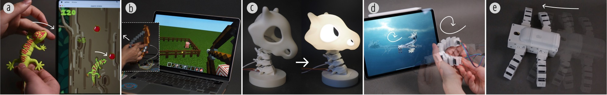
Figure 1. Xspine applications include: (a) game controller, (b) force tunable device, (c) desk lamp with self-sensing capabilities, (d) tangible module for animation, and (e) embodied intelligence prototype.
ABSTRACT
We present Xspine, a design and fabrication method for creating motion-capable, self-sensing structures using multi-material FDM 3D printing with conductive filaments. Xspine embeds compliant mechanisms and circuits directly into geometry, enabling large deformations to be detected in a single, assembly-free print. The method combines printable conductive components, time-division multiplexed circuit layouts, and an interactive design tool for configuring motion, previewing deformation, and generating fabrication-ready outputs. Together, these pieces turn static models into customizable interactive artifacts that can sense their own motion.
INTRODUCTION
Human-computer interaction research has long explored ways to bridge the physical and digital worlds through tangible and deformable interfaces. A major thread in this work is augmenting shape-changing structures with sensing, so that motion is not only expressive but also computationally legible. At the same time, fabrication research has tried to lower the barrier to building such systems, making them easier to prototype, customize, and adapt for different applications.
3D printing has become a widely used tool for rapid prototyping of dynamic interfaces, including compliant, elastic, bistable, and shape-memory mechanisms. Yet most 3D-printed dynamic systems are still passive: they can deform, but they cannot sense or respond to their own motion. Some approaches add sensing through post-processing such as electroplating, casting, or manually embedding components. These methods can work well, but they are labor-intensive and often difficult for non-expert users to reproduce.
Recent advances in multi-material 3D printing and conductive filaments have made it possible to directly print sensors such as touch surfaces, sliders, and internal sensing structures. However, many existing systems either focus on surface interaction, require specialized conductive materials, or depend on continuous resistance changes that are unstable with consumer-grade conductive PLA and TPU. In practice, these materials often have high resistance and noticeable variability, making analog deformation sensing difficult to use reliably.
Xspine addresses this challenge by reframing sensing as a discrete contact problem. Instead of trying to read subtle continuous resistance changes from a deforming path, Xspine divides motion into explicit contact events at predefined nodes. The structure is designed so cut-outs reliably close during deformation, conductive pads and paths convert those contact events into digital signals, and the overall geometry and circuitry are co-designed in a single printable object. This approach enables one-step fabrication of motion-capable, self-sensing structures using accessible multi-material FDM printing.
To make the system usable beyond one-off expert prototypes, the paper also introduces an interactive design tool for converting static 3D models into motion-aware structures with embedded sensing. The work is further supported by technical evaluation, a user study, and a set of application examples that demonstrate how Xspine can serve as a platform for customizable interactive 3D-printed devices.

Figure 2. Overview of the Xspine pipeline and representative applications.
XSPINE METHOD
Compliant structure and conductive components
Creating motion-capable, self-sensing structures with multi-material FDM printing involves three linked challenges: enabling reliable surface contact during deformation, converting those contacts into stable electrical signals, and fabricating structures that remain usable after printing. Xspine addresses these challenges through a pipeline that combines geometric design, embedded conductive components, circuit layout strategies, and fabrication tuning.
Xspine starts from a static 3D model and inserts compliant motion by cutting repeated triangular prisms into the geometry. These cuts define a set of bending nodes, while rectangular cut-outs reserve space for compliant bridges that connect rigid segments. As the structure bends, the faces are guided into repeatable contact, turning deformation into stable sensing events. The prism angle controls the maximum displacement of a node, while the rectangular cut-outs determine bridge length and therefore influence stiffness and required actuation force. A smaller angle supports limited bending, while a larger angle allows a wider range of motion but slightly extends the conductive path around the node.
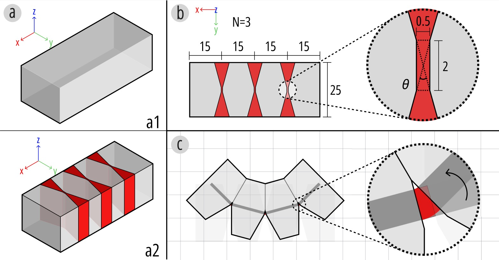
Figure 3. The Xspine structure is created by (a) adding cut-outs for reliable contact and (b) reserving space for compliant bridges. (c) Bridges deform during bending.
Conductive TPU is then embedded into the compliant mechanism to directly convert mechanical contact into electrical readout. The paper defines three core conductive elements: conductive paths, contact pads, and pin connectors. Conductive paths run along the structure's axis like a spine, transmitting signals while remaining separated at different Z-heights by non-conductive PLA. Contact pads serve as sensing terminals and are extended through the full Z-range of the circuit layers to guarantee bridging at intended contact points. Pin connectors provide a printed interface for external electronics such as Dupont-style pins. Together these components form an integrated sensing circuit within the structure.
A key part of the method is the circuit layout strategy. Rather than assigning an independent line to every sensing location, Xspine uses time-division multiplexing. In double-sided bending structures where left and right contacts are mutually exclusive, this cuts wiring substantially compared with naive bus layouts. The reduction is not just electrically cleaner: it also reduces print height, fabrication time, and material consumption, making the approach more practical for actual 3D printing. The paper also discusses a more aggressive simplified wiring strategy that merges all receivers into a single line, although this comes with reliability tradeoffs because conductive TPU resistance varies with path length and contact quality.
Fabrication reliability
Fabrication reliability is a core part of the Xspine method. The paper explains that all samples were printed on a Bambu Lab H2D dual-extrusion FDM printer using conductive TPU together with rigid PLA. Conductive TPU must be deposited on a solid PLA base rather than sparse infill; otherwise, the first TPU layers can stretch, break, or form unstable traces. Volumetric speed is also a key parameter: extrusion that is too fast increases stringing and unintended connections, while extrusion that is too slow causes sagging in the compliant bridges. Because the same printed elements are responsible for both deformation and sensing, these fabrication settings directly shape interaction quality and sensing stability.
PHYSICAL AUGMENTATION
Xspine is not only a sensing method; it is also a design space for shaping physical interaction. The paper explores four forms of physical augmentation: motion primitives, force-feedback customization, bistable mechanisms, and actuation. Together they show how sensing can be paired with richer mechanical behavior rather than treated as a separate layer.
The two core motion primitives are bending and coiling. Bending can be configured as single-sided, dual-sided, or mixed-direction within one structure, while coiling extends bending by tilting the repeated cut geometry to create continuous winding along the axis. These primitives let designers move beyond simple planar deformation into more expressive motion vocabularies.
Force feedback can be customized by embedding auxiliary cables on the side opposite a bend. Moving the cable farther from the neutral axis increases stiffness and raises the force needed to close the contact pads. In multi-joint structures, varying cable offsets can produce sequential rather than simultaneous closures, which creates graded tactile feedback as well as richer temporal sensing states.
Xspine also incorporates bistable mechanisms, where curved contact pad geometry lets the structure snap into distinct stable states while maintaining reliable electrical contact. Finally, the paper demonstrates cable-driven actuation, showing how embedded sensing can be combined with externally driven motion in a closed loop. This begins to move Xspine from passive interactive objects toward adaptive physical systems.
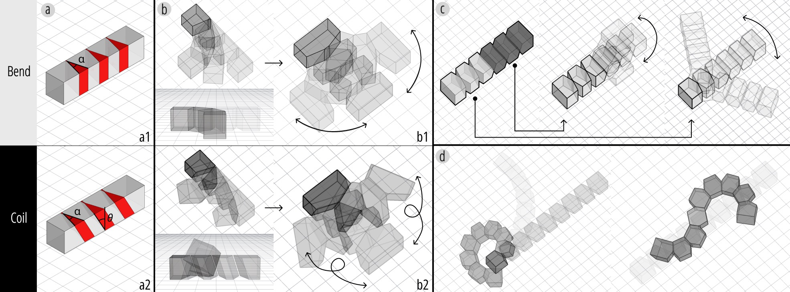
Figure 4. Motion primitives of Xspine: (a) bending and coiling; (b) single-sided and dual-sided bending; (c) combining bending directions within one structure; and (d) extended coiling.
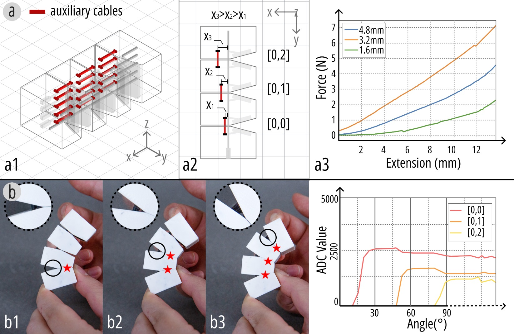
Figure 5. Force-feedback customization by embedding auxiliary cables at different offsets and producing sequential pad closures in multi-joint structures.
The force-feedback mechanism is especially important because it lets a designer tune not just whether a structure bends, but how it feels to bend it. In the paper, cable offsets of 1.6 mm, 3.2 mm, and 4.8 mm lead to measured force increases from 2.3 N to 4.5 N and 7.1 N, respectively. In multi-joint structures, using different offsets also creates a temporal order of pad closure under increasing load, which means the same object can encode richer interaction states while still using simple contact sensing.
Bistable mechanisms extend this design space further by providing clear snap-through behavior and stable post-contact states. Xspine uses curved contact pads so that after the structure passes the equilibrium point, the contact surfaces remain engaged even when the force is released. This makes the signal more reliable and gives the user tactile confirmation that a state change has occurred.
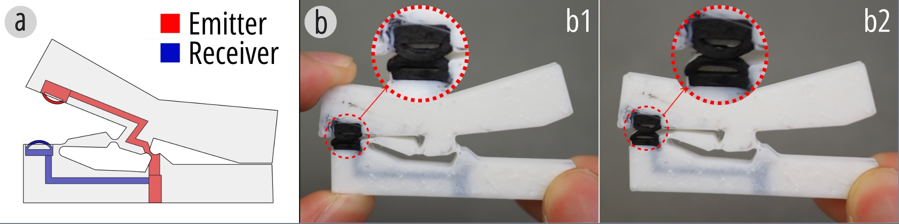
Figure 6. The bistable mechanism is integrated into the structure through the circuit layout and curved contact pad design.
When several bistable units are connected in one structure, the contacts close sequentially rather than simultaneously, producing temporal features in the sensing signal. The final contact pair often peaks while load is still applied and then decreases slightly after release, whereas earlier contacts remain engaged. This behavior suggests that bistable Xspine structures can support both function-oriented state transitions and interpretable multi-stage signals.
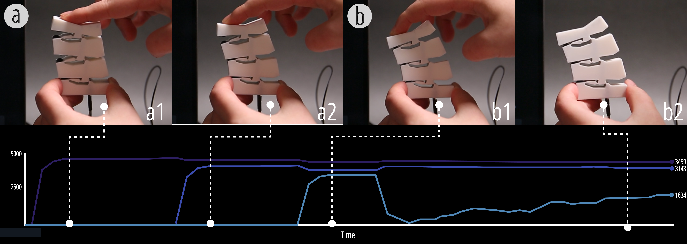
Figure 7. Sensing signals of multiple bistable units, including sequential pad closure and signal behavior after release.
The actuation method closes the loop between motion and sensing. The paper demonstrates a six-node, four-degree-of-freedom Xspine structure with embedded cables connected to servo motors. During motion, the conductive paths continuously sense deformation, allowing the system to adapt to changing gravity directions or external loads. This coupling of actuation and self-sensing is what allows later application examples such as the quadruped robot to behave as more than passive interactive artifacts.
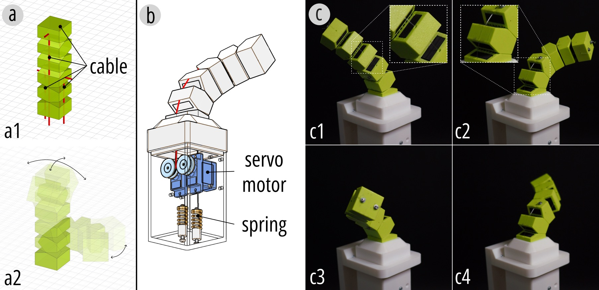
Figure 8. Cable-driven actuation of Xspine: motion range, servo-driven cable integration, and actuation demonstration.
DIGITAL AUGMENTATION
On the digital side, Xspine treats sensing data as something to interpret, visualize, and classify rather than merely detect. The first layer is visualization: the system presents raw sensing signals as line charts so designers and users can inspect amplitude, timing, consistency, and the relationships between different contact events. This makes fabrication artifacts, partial contacts, and multi-contact behavior much easier to understand in practice.
The digital augmentation section begins with a resolution experiment on a 2x4 sensing matrix. With a 1 MOhm series resistor on each receiver, single contacts usually saturate the ADC, while multi-contact cases produce slightly lower readings because of current diversion and voltage division. This matters because it shows that multi-contact behavior is not simply the sum of single contacts; it has its own patterns that can later be used for richer interaction design.
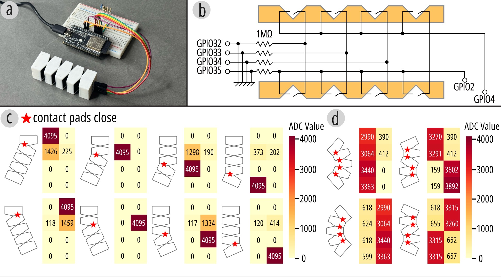
Figure 9. Experimental setup for contact sensing: test piece, wiring arrangement, single-point contact, and multi-point contact.
These findings motivate the visualization interface. By showing single-sensor and multi-sensor traces in one place, the system helps users understand how local responses contribute to overall deformation. The paper highlights examples where one sensing node remains fully engaged, another fluctuates due to intermittent partial contact, and another begins from an elevated baseline because of printing artifacts but still reaches its expected peak under full press. The interface is therefore not just for display; it is a diagnostic tool for understanding how the printed structure actually behaves.

Figure 10. Visualization interface for sensor readings: single-sensor view, multi-sensor view, and example motion visualizations.
The paper then moves from visualization to motion classification. Instead of limiting interaction to binary contact detection, Xspine uses the temporal patterns of multi-joint sensing signals to support user-defined motion categories. A dedicated data-collection interface records labeled trials, and PCA-based visualization gives users a quick view of signal separability before training.

Figure 11. Motion classification workflow from data collection through recorded motion types to data analysis.
For classification, the authors use an SVM with an RBF kernel and evaluate five representative motion types: idle, left-to-right bend, right-to-left bend, swing, and flick. After a two-stage hyperparameter search, the optimized classifier achieves 96% test accuracy. This result matters because it shows that Xspine can support not only structural sensing, but also customizable motion vocabularies and richer digital interaction built on the same printed hardware.
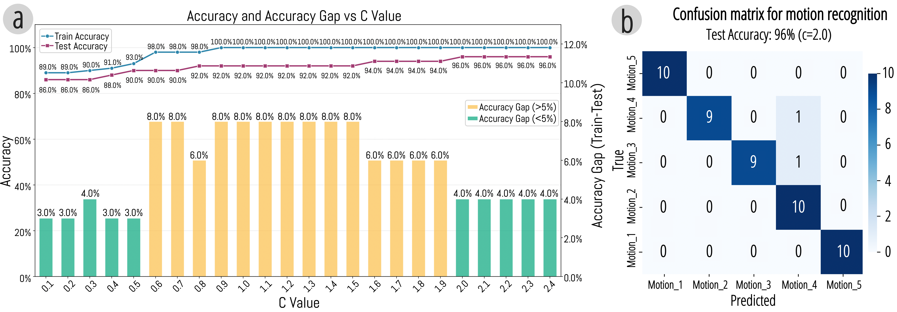
Figure 12. SVM evaluation, including hyperparameter search and final test accuracy.
DESIGN TOOL
The design tool is a substantial contribution in its own right. It provides a structured workflow that moves from importing a geometry to parameter adjustment, motion preview, assistive-structure embedding, and circuit generation. Users can start with a static model, choose a primitive such as bending or coiling, configure cut-out counts and angles, preview the resulting deformation, and then add supporting structures like auxiliary cables, bistable elements, or actuation anchor points.
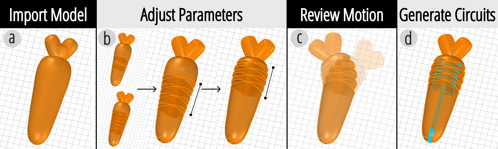
Figure 13. Overview of the design tool workflow, from model import and parameter editing to motion preview and circuit generation.
The first stage of the tool focuses on embedding motion primitives. Users import a static model, select a primitive, define its direction, and adjust parameters such as cut-out number, spacing, and angle. The tool provides tested default values but keeps everything editable, and it supports rotating selected nodes to change bending direction, especially for models with rotationally consistent cross-sections such as circles or squares.
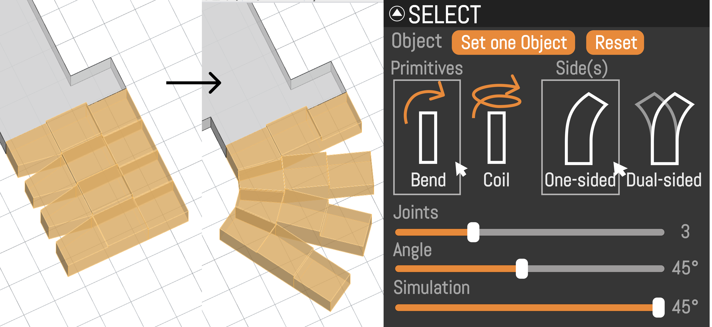
Figure 14. Design tool for embedding motion primitives.
After the basic motion shape is configured, users can embed assistive structures to enrich behavior. These include auxiliary cables for force tuning, bistable mechanisms for discrete tactile states, and perforations that serve as anchor points for later actuation. Once this stage is complete, the tool switches to circuit generation and automatically produces conductive paths, contact pads, and pin connectors aligned with the final geometry and sensing scheme. The result is not just a motion-capable form, but a fabrication-ready multi-material print with integrated sensing logic.
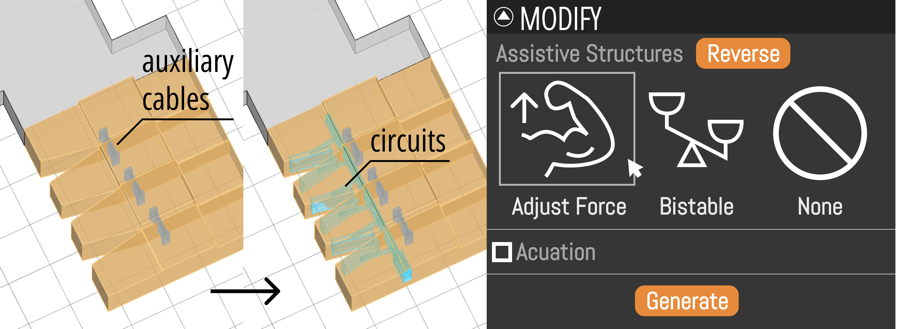
Figure 15. Design tool for embedding assistive structures and generating circuits.
EVALUATION
The evaluation focuses on whether consumer-grade conductive TPU can support robust self-sensing in practice. First, the paper measures resistance characteristics of printed conductive paths with different widths. Resistance is generally inversely proportional to cross-sectional area, but variation across prints appears because conductive TPU is softer and more prone to inconsistent flow, micro-voids, and stringing than rigid materials. This confirms that raw conductive behavior is variable and needs to be interpreted carefully.
Second, the authors test printed pin connectors under repeated insertion cycles. Resistance drifts upward after repeated use, indicating gradual material degradation at the conductive interface, but the drift remains far below the 1 MOhm reference resistor used in the sensing circuit. In other words, the connectors degrade measurably, yet remain functionally stable for the binary detection tasks that Xspine targets.
Third, the paper studies the stability and lifetime of compliant bridges during cyclic motion. In a fatigue test driven by a stepper motor over more than 100,000 bending cycles, the bridges eventually fractured after roughly 60,000 cycles. Before failure, resistance changed only moderately, with occasional spikes likely caused by progressive filament breakage. This shows that the structures are durable enough for meaningful interaction, but also makes clear that frequent use can shift electrical behavior over time.
Beyond material durability, the paper also evaluates sensing resolution, visualization behavior, and motion classification. Taken together, the evaluation paints a realistic picture: Xspine is reliable enough for interactive applications and discrete motion sensing, but it is not a precision analog sensor platform. That boundary is part of the strength of the work, because the design choices are explicitly matched to what the material can support well.
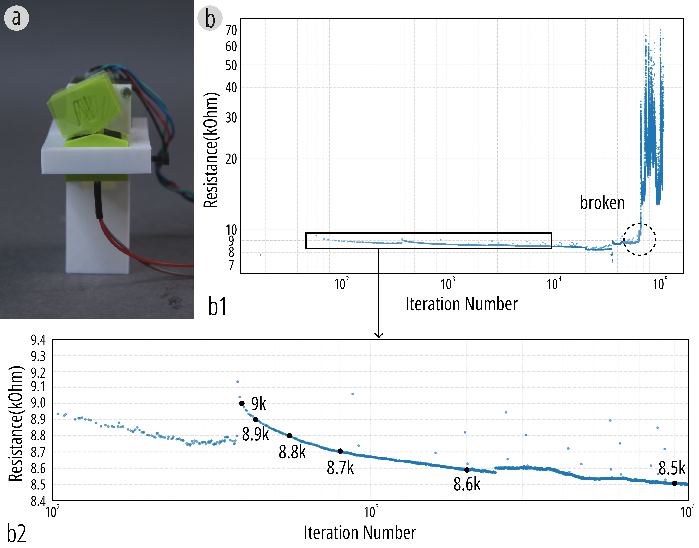
Figure 16. Stability and lifetime of compliant bridges during motion, including the fatigue-test setup and resistance change over repeated bending cycles.
APPLICATION
The application section demonstrates that Xspine can support a wide range of interactive artifacts, from personal objects and game controllers to animation tools and feedback-aware robotic systems. Across all examples, the same core idea is reused: the printed structure provides motion, conductive contact events provide self-sensing, and the sensed states are mapped directly to digital functions or adaptive physical behavior. This makes the application set important because it shows that Xspine is a reusable interaction platform rather than a single fabricated demo.
The first application is a carrot-shaped fidget toy that senses and logs bending motions. Repeated bending metaphorically “pulls out a carrot,” turning an otherwise invisible repetitive action into a visible form of release. On the tactile level, the user experiences the satisfaction of repeated deformation, while on the signal level, the recorded data provides analyzable interaction logs that can reveal usage patterns over time. This example shows how even a small everyday object can become a self-reporting interactive artifact when sensing is embedded directly into the compliant structure.
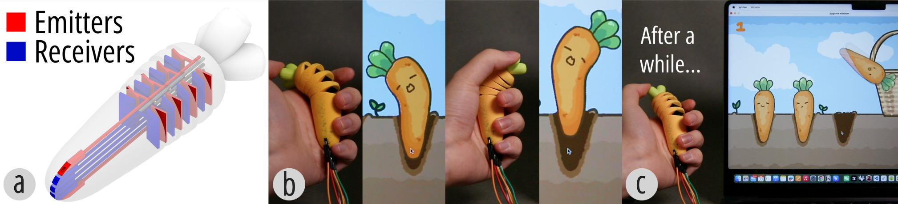
Figure 17. The carrot-shaped fidget toy: (a) circuit layout, (b) sensing and logging of bending motions, and (c) the “pulling out a carrot” interaction metaphor after repeated bends.
A related example uses the same sensing principles for gameplay. The lizard-shaped controller is created using the interactive design tool and maps light and strong bends to different turning commands in a climbing game. Players steer the digital lizard by gently or fully bending the physical structure to the left or right, demonstrating low-latency, expressive control with an object whose form already suggests how it should be held and deformed.
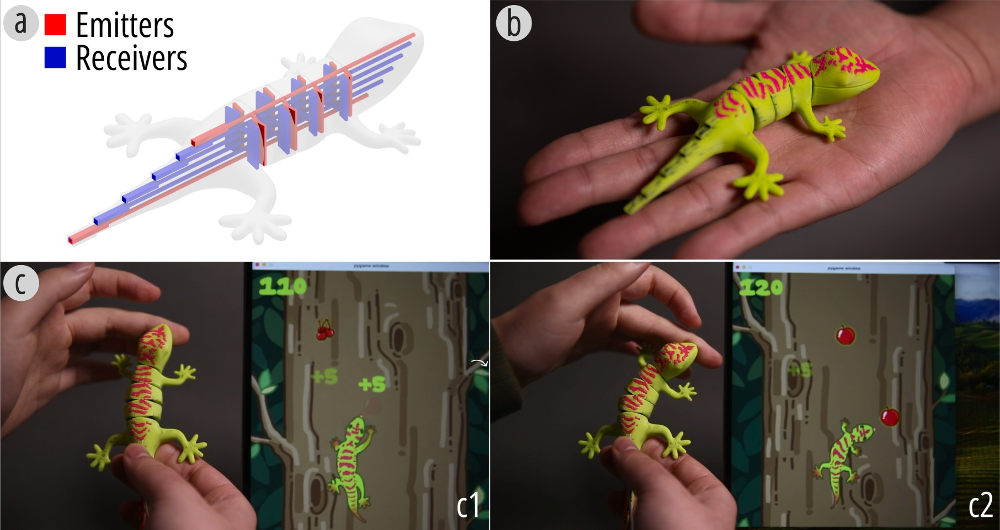
Figure 18. Lizard-shaped game controller: (a) circuit layout, (b) printed controller, and (c) gameplay interaction.
The paper then scales this interaction style to richer multi-state input with a bow-shaped controller for Minecraft. The controller senses the pulling force through three pairs of contact pads corresponding to light, medium, and strong levels. As the bowstring is pulled, the pads close sequentially to detect the force level, while three tension cables printed on the opposite side provide progressively increasing stiffness. Two bending primitives in different orientations allow players to adjust both horizontal and vertical aiming angles. This single-step printed device combines multi-level force sensing, adjustable mechanical feedback, and directional control to create an immersive archery experience.
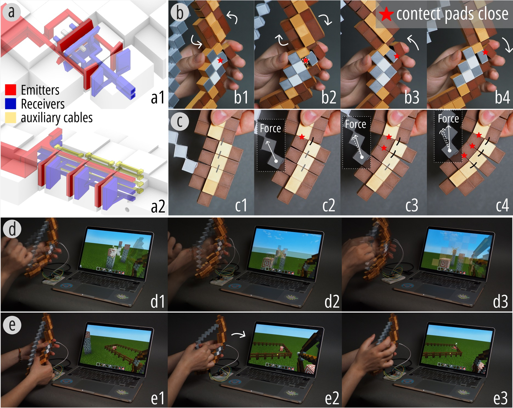
Figure 19. Bow-shaped controller for Minecraft, integrating multi-level force sensing, adjustable stiffness, and directional aiming control.
Xspine also supports function-oriented everyday devices. In the bistable lamp, brightness is controlled by a bistable Xspine structure embedded within the skeleton. The microcontroller samples the internal state signals via an ADC and maps the number of closed contact-pad pairs to PWM brightness levels. As more bistable joints close and remain latched, the brightness increases accordingly. This supports reliable multi-level brightness control with clear tangible feedback, showing how self-sensing structures can move beyond transient gestures into persistent, task-oriented interaction.
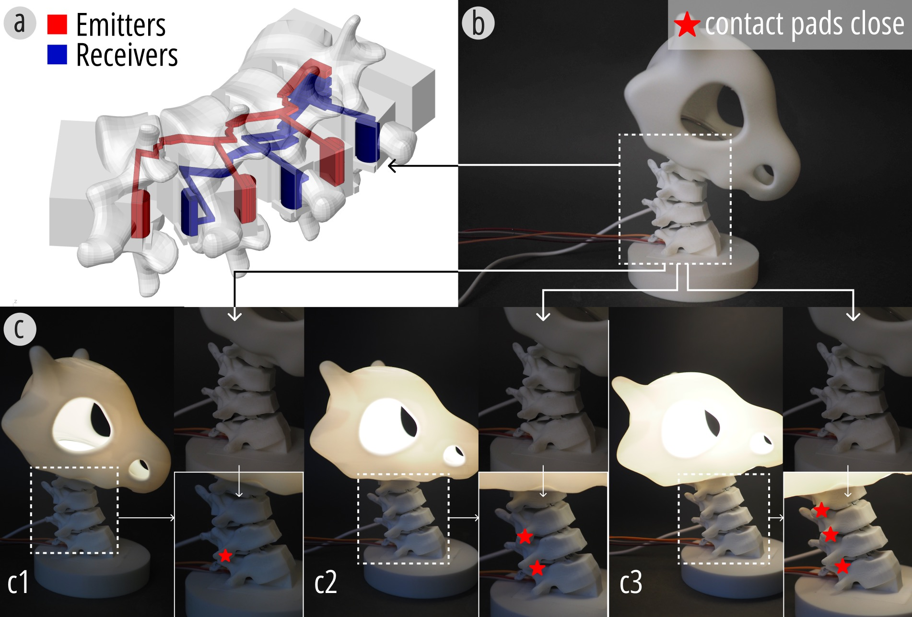
Figure 20. The lamp demonstrates (a) its circuit layout, (b) the initial state, and (c) different brightness levels controlled by the bistable structure.
The tangible animation example extends Xspine into motion authoring. The paper presents a coiling-based prototype that serves as a controller for animating a dragon in Unity. The device contains ten pairs of cut-outs, among which six pairs are instrumented with contact pads. On the software side, the authors rigged a skeleton in Blender and bound each sensing channel to corresponding bones of the dragon model in Unity. When users bend or coil different sections of the tangible device, the virtual dragon exhibits synchronized behaviors such as head swings, body coiling, and alternating crawling. This example highlights how Xspine can function as a bridge between embodied input and expressive digital animation.

Figure 21. Tangible animation controller for a dragon rig in Unity, including the physical device, rigging pipeline, and corresponding virtual motion.
The final application moves from input devices toward embodied systems. The quadruped robot integrates Xspine-based legs with cable-driven actuation and uses the self-sensed deformation signals as motion feedback. With an additional Xspine-based leg used as a controller, the robot attempts to reproduce a reference trajectory while adjusting its motion according to measured feedback. After repeated iterations, the alignment between input and feedback improves, allowing the system to better compensate for deviations caused by external conditions such as uneven terrain. This example is especially significant because it shows Xspine operating as part of a larger closed-loop robotic system rather than only as a human input device.

Figure 22. Embodied intelligence prototype: circuit layout, controller input, quadruped robot output, and signal alignment between command and sensed feedback.
Taken together, these examples cover logging, game input, force-sensitive control, bistable state interaction, tangible animation, and feedback-aware robotics. Figure 1 gives an overview of representative application directions, while the detailed cases here show how motion, tactile feel, sensing, and interactive meaning are designed together in the same printed structure from the start.
CONCLUSION
Xspine introduces a design and fabrication method that integrates motion and self-sensing into 3D-printed structures using multi-material FDM printing. By embedding compliant mechanisms and conductive components directly into geometry, the system enables reliable detection of large deformations in a single, assembly-free print. Physical augmentation, digital augmentation, technical evaluation, and tool support together show that Xspine is not just a fabrication demo but a broader workflow for creating customizable, motion-aware interactive artifacts.